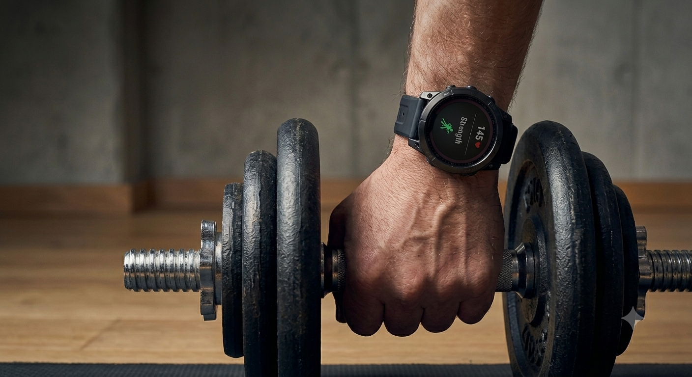
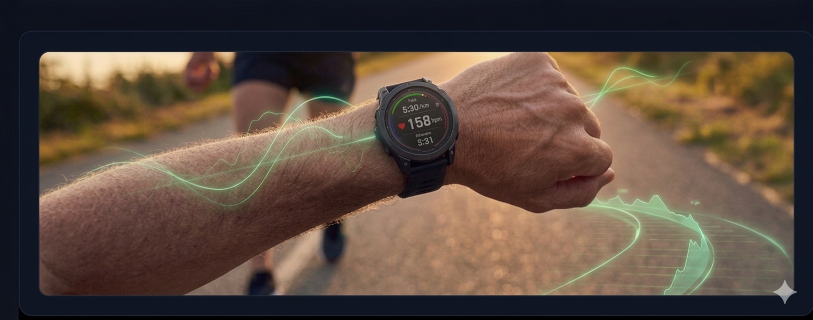

📊 Garmin Krafttraining & Vitalwerte
Diese Tabelle dokumentiert die Struktur deiner disziplinierten Trainingseinheiten. Sie zeigt die genauen Belastungsphasen, Sätze und Intensitäten.
| Datum / Zeit | Dauer | Sätze / Wdh. | Kalorien (Aktiv / Gesamt) | Puls (Ø / Max) | Training Effect |
|---|---|---|---|---|---|
| Lade Garmin-Live-Daten... | |||||

🏃♂️ Garmin Cardio- & Ausdauerdaten
Übersicht deiner Ausdauereinheiten. Hier analysieren wir Distanzen, Geschwindigkeiten und die dynamische Herzfrequenz-Entwicklung.
| Datum | Aktivität | Dauer | Distanz / Schritte | Kalorien | Puls (Ø / Max) |
|---|---|---|---|---|---|
| Lade Garmin-Live-Daten... | |||||
Garmin Wochenstatistiken
Historische Übersicht deiner wöchentlichen Trainingsleistung.
| WOCHE | INTENSITÄTSMINUTEN | ZIEL % | AKTIVITÄTS-KCAL | SCHRITTE GESAMT |
|---|---|---|---|---|
| Lade Wochenstatistiken... | ||||
🪙 Krypto & Web3
Die Onchain-Infrastruktur auf L2s wie Base zeigt eindrucksvoll, wo die Reise hingeht. Für mich ist diese Entwicklung die Konsequenz einer langen Reise: Ich bin seit 2015 dabei und beobachte den Markt täglich.
Wie viele stand ich damals vor einer bahnbrechenden, aber anfangs unerkannten Möglichkeit. Doch nach dem ersten Eintauchen in den Kaninchenbau wurde Krypto schnell zum absoluten Lebensinhalt.
Ich habe die unerbittlichen Marktzyklen hautnah durchlebt – von den wilden Anfängen über die großen Bullruns 2017, 2021 und 2025 bis heute. Jeder Zyklus hat bewiesen: Geduld und Disziplin schlagen kurzfristigen Hype.
Wie geht es weiter mit Kryptos und vor allem Bitcoin?
Bitcoin hat seinen Platz als digitales Gold im globalen Finanzgefüge zementiert. Die Zukunft des restlichen Ökosystems entscheidet sich jetzt an der echten Nutzbarkeit (Utility) – schnelle, kostengünstige Onchain-Anwendungen auf L2s werden den Ton angeben. Wir stehen erst am Anfang.
base.org
Base – Build onchain
Kommentare (0)
Noch keine Kommentare vorhanden.
📈 Wirtschaft & Märkte
Die weltweiten Schuldenberge wachsen unaufhaltsam weiter. Wer jetzt nicht in harte Assets diversifiziert, setzt sich langfristig einem enormen Kaufkraftverlust aus.
example.com/marktbericht
Analyse der globalen Liquiditätszyklen
Kommentare (1)
🏛️ Politik & Zeitgeschehen
Interessante Verschiebungen in den regulatorischen Rahmenbedingungen auf europäischer Ebene. Man versucht krampfhaft, dezentrale Netzwerke in alte Kontrollmuster zu pressen.
Kommentare (0)
Noch keine Kommentare vorhanden.
👤 Werdegang & Transformation
Wie aus Bequemlichkeit radikale Veränderung wurde.
🔴 Zwei Jahrzehnte Stillstand (Alter 25 bis 45)
Zwanzig Jahre lang war Sport in meinem Leben praktisch ein Fremdwort. Schlechte Ernährung, wenig Bewegung und die alltäglichen Ausreden führten zu einer stetigen Abwärtsspirale.
⚡ Die Selbsterkenntnis (2018)
Bei einer Körpergröße von 1,80 m brachte die Waage schließlich die nackte Wahrheit ans Licht: 98 kg. In diesem Moment fiel die Entscheidung, mein Leben grundlegend umzukrempeln.
🏃♂️ Der Neustart & 15 kg Gewichtsverlust
Der Anfang war simpel, aber konsequent: Nordic Walking. Richtige Sportausrüstung gekauft und ab diesem Tag gab es keine Ausreden mehr, egal bei welchem Wetter.
🏋️♂️ Das Fundament: Krafttraining & Routine (Seit 2019)
Wer einmal Blut geleckt hat, will mehr. 2019 reichte mir das reine Gehen nicht mehr aus. Ich habe eine Hantelbank und Gewichte angeschafft und trainiere seitdem eisern nach Plan.